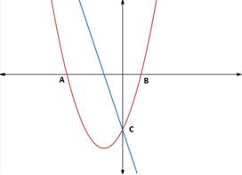
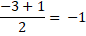
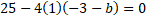

Functions Culminating
by Gene Song
Chapter 3 & 4 Review
Quadratic
Functions & Exponential Functions
Quadratic Functions
A quadratic function is one of the form f(x) = ax² +
bx + c, where a, b, and c are numbers, and a must not equal to zero. When you
graph a quadratic function, it is called a parabola. Parabolas vary between
whether they open upward or downward, “width,” or “steepness,” but they are all
characterized by the same “U” shape.
All three graphs above
are parabolas. (Image provided from shorturl.at/ijCQV)
Exponential Functions
A exponential function is one of the form f(x) =
bˣ, where b is any number greater than zero and not equal to one. B is
called the base and x is the exponent. Similarly to quadratic functions,
different exponential function graphs could have all sorts of asymptotes,
translations, and reflections. Exponential function graphs, however, are
characterized by their single “curves.”
All three graphs above
are exponential function graphs. (Image provided from https://www.analyzemath.com/expfunction/expfunction.html)
Question #1
The points A and B are -intercepts of quadratic function and C is the -intercept. The line passes through point C and divide the area of triangle ABC in half.

a)
Determine
the -intercept of
b)
Determine
the -intercept of
Clue: To find the -intercept. You need to set 
Step by Step Answer:
Set
y = 0 as the x-intercepts of the function is on the x-axis
Therefore, x-intercepts are (-3, 0)
and (1, 0)
c)
Determine
the slope of the line
Clue: Recall the area of triangle is .
Consider as a base of triangle ABC. Since the line
divide area of triangle ABC in half, the line must pass through the midpoint of
AB.
Step by Step Answer: We know that b(y-intercept) on is the same as y-intercept of . We know from a), the y-intercept of is .
Therefore,
.
So
we have as a line. Now we need to determine the value
of .
Recall
the area of triangle is . Consider AB as a base of triangle
ABC. Since the line divides the area of triangle ABC in half, the line must
pass through the midpoint of AB.
From
b), we learned the x-intercepts are -3 and 1, so we can find the midpoint.

The
line must passes through this midpoint .
We
put in this information into the equation.
Now
we can find the slope:
Therefore,
d)
Determine
the equation of tangent line that is parallel to the line in (c). (leave your
answer in decimal number or integer)
Clue: First of all, the tangent line must
share same slope as the line in (c) since they are parallel. Secondly, the
tangent line has one intersection point with the line in (c) . Finally, remember
how to use dermininant .
if
then the quadratic equation has two
distinct real roots.
if
then the quadratic equation has one real root.
if
then the quadratic equation has no real root.
Step by Step Answer: We know the tangent line must have the
same slope as the line in c)
Therefore,
the tangent line should be
To
find intersection between and, we need to use substitution;
,
which must have one solution
i.e.
has one root.
Then
the discriminant should be zero.

The tangent line is
e)
Determine
the point where the tangent line intersect with . (leave your answer in decimal number
or integer)
Clue: Use substitution to find the
intersection
Step By Step Answer:
Solve:
By
using substitution, we get
We
find the value of y by putting our newfound x value into equation 2

Therefore, the coordinate of the
intersection point is (-2.5, -1.75)